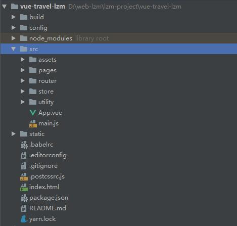

VueJS学习起来非常简单，但需要了解的知识：HTML、CSS、JavaScript。
1、VueJS 是一套构建用户界面的渐进式框架；
2、VueJS 只关注视图层， 采用自底向上增量开发的设计；
3、VueJS 的目标是通过尽可能简单的 API 实现响应的数据绑定和组合的视图组件。
| VueJS 指令 | |
|---|---|
| 代码 | 描述 |
| v-model | 绑定指令v-model="message" |
| v-if | 条件渲染指令v-if="yes" |
| v-show | 也是条件渲染指令，会被渲染，改变display的值v-show="yes" |
| v-else | v-else元素必须立即跟在v-if后面 |
| v-for | 指令基于一个数组渲染一个列表v-for="item in items" |
| v-bind | 指令可以在其名称后面带一个参数v-bind:class="activeNumber === 1 ? 'current' : ''":class="activeNumber === 1 ? 'current' : ''" |
| v-on | 指令用于给监听DOM事件v-on:click="createPerson"@click="createPerson" |
| 脚手架搭建 | |
|---|---|
| 描述 | 代码 |
| 准备 | npm install vue-cli -g确保已全局安装node、npm |
| 下载 | vue init webpack my-project下载脚手架项目 |
| 运行 | npm start把服务跑起来 |
| 结构图 |  |
| 接口代理设置 | |
|---|---|
| 描述 | 代码 |
| 解决跨域的问题 |
修改文件：./config/index.js proxyTable: { '/lots-web/**': { target: 'http://localhost:8080' // 接口的域名 } }, // 更改端口 port: 6001, // 是否在编译（输入命令行npm run dev）后打开浏览器http://localhost:6001 autoOpenBrowser: false, |
| 开发环境本地数据挂载 |
proxyTable: { '/api': { target: 'http://localhost:7000', pathRewrite: { '^/api': '/static/mock' } } }, json数据文件路径：static/mock/index.json |
| styles路径/scss预编译 | |
|---|---|
| 描述 | 代码 |
| styles路径配置 |
alias: { 'vue$': 'vue/dist/vue.esm.js', '@': resolve('src'), 'styles': resolve('src/assets/styles') } |
| scss预编译 |
安装模块： npm install --save-dev sass-loader npm install --save-dev node-sass { test: /\.sass$/, loaders: ['style', 'css', 'sass'] } 修改文件：xxx.vue style lang='scss' |
| variables.scss/variables.styl预编译 | |
|---|---|
| 描述 | 代码 |
| 全局引用variables.scss变量文件 |
安装模块： npm install --save-dev sass-resources-loader scss: generateLoaders('sass').concat( { loader: 'sass-resources-loader', options: { resources: path.resolve(__dirname, '../src/assets/styles/variables.scss') } } ), |
| 全局引用variables.styl变量文件 |
安装模块： npm install --save-dev stylus npm install --save-dev stylus-loader const stylusOptions = { import: [ path.join(__dirname, "../src/assets/styles/variables.styl") ] } return { stylus: generateLoaders('stylus', stylusOptions), styl: generateLoaders('stylus', stylusOptions) } |
| 主文件 | |
|---|---|
| 描述 | 代码 |
| 初始 |
import Vue from 'vue' import App from './App' import router from './router' // 路由 Vue.config.productionTip = false // 设置为 false 以阻止 vue 在启动时生成生产提示 new Vue({ el: '#app', router, components: {App}, template: ' }) |
| 入口 |
import router from './router' // 路由 import store from './store' // 状态 import api from './utility/api' // 接口 |
| 模块 |
import axios from 'axios' // 接口调用 import 'babel-polyfill' // ie9和一些低版本的浏览器对es6新语法的不支持问题 import fastClick from 'fastclick' // 延迟300毫秒 import VueAwesomeSwiper from 'vue-awesome-swiper' // 图片轮播 import BScroll from 'better-scroll' // 拖动插件 |
| 公用样式 |
import 'styles/reset.css' // 重置 import 'styles/common.css' // 公共 import 'styles/border.css' // 1像素边 import 'styles/iconfont.css' // 文字图标 import 'swiper/dist/css/swiper.css' // 图片轮播 |
| 公用组件 |
import Fade from '@/pages/common/fade' // 显隐过渡 import Gallery from '@/pages/common/gallery' // 画廊 Vue.component('c-fade', Fade) Vue.component('c-gallery', Gallery) |
| 全局调用 |
Vue.use(VueAwesomeSwiper, /*{default global options}*/) // 图片轮播 Vue.prototype.$scroll = BScroll Vue.prototype.$http = axios Vue.prototype.$api = api |
| 其他 |
fastClick.attach(document.body) // 为消除移动端浏览器，从物理触摸到触发点击事件之间的300ms延时的问题 |
| 创建Vue |
new Vue({ el: '#app', router, store, components: {App}, template: '<App/>' }) |
| vue入口文件 | |
|---|---|
| 描述 | 代码 |
| keep-alive数据缓存 |
<keep-alive :exclude="exclude"> <router-view/> </keep-alive> data(){ return { exclude: [ 'Detail' ] } } |
| 用法 |
1、如不填，则缓存全部组件 2、keep-alive include="City"，缓存name='City'的组件 3、keep-alive exclude="Detail"，不缓存name='Detail'的组件 |
| 生命周期 |
当时用keep-alive的时候，会触发activated和deactivated生命周期 activated 当组件被激活的时候调用 deactivated 当组件被移除的时候调用 |
| 路由文件人口 | |
|---|---|
| 描述 | 代码 |
| 初始 |
import Vue from 'vue' import Router from 'vue-router' import Home from '@/pages/home/home' export default new Router({ routes: [ { path: '/home', component: Home } ] )} |
| 组件和路由路径 |
import Home from '@/pages/home/home' const path = { home: '/' } |
| 路由和组件渲染 |
routes: [ { path: path.home, component: Home } ] |
| 路由"#"号去除 |
mode: 'history', |
| 当前路由添加.active |
linkActiveClass: 'active', linkExactActiveClass: 'active', |
| 切换路由时界面始终显示顶部 |
scrollBehavior(to, from, savePosition){ return { x: 0, y: 0 } } |
| vue用$route获取router |
// $router 路由：'/detail/:name' // '/detail/lzm' this.$route.params.name 路由：'/detail' // 'detail?name=lzm' this.$route.query.name |
| 状态管理文件入口 | |
|---|---|
| 描述 | 代码 |
| 状态管理 |
import Vue from 'vue' import Vuex from 'vuex' import state from './state' import mutations from './mutations' import actions from './actions' Vue.use(Vuex) export default new Vuex.Store({ state, mutations, actions }) |
| 第四步state.js |
let defaultCity = { id: 1, spell: 'beijing', name: '北京' } if(localStorage.city){ defaultCity = JSON.parse(localStorage.city) // 字符串转对象 } const state = { city: defaultCity } export default state |
| 第三步mutations.js |
const mutations = { changeCity(state, payload){ state.city = payload localStorage.city = JSON.stringify(payload) // 当为对象是，要转字符串 } } export default mutations |
| 第二步actions.js |
const actions = { changeCity(context, payload){ context.commit('changeCity', payload) } } export default actions |
| 第一步xxx.vue |
template部分： <div @click="handleClick(item)">{{city}}</div> script部分： import { mapState, mapActions} from 'vuex' export default { computed: { ...mapState(['city']) } methods: { ...mapActions(['changeCity']) handleClick(city){} this.changeCity(city) } } } |
| $http调用接口 | |
|---|---|
| 描述 | 代码 |
| 全局调用 |
修改main.js文件 Vue.prototype.$http = axios xxx.vue文件： this.$http.get('/api/index.json', {params: {...}}).then(fn(data)).catch(fn(data)); |
| 局部调用 |
xxx.vue文件： import axios from 'axios' axios.get('/api/index.json').then(fn(data)).catch(fn(data)); |
| 案例 |
getHomeData() { this.$http .get(this.$api.home, { params: { name: this.city.name } }) .then(res => { let resData = res.data; if (resData.ret && resData.data) { let data = resData.data this.bannerList = data.bannerList this.iconList = data.iconList this.likeList = data.recommendList this.weekendList = data.weekendList } }) .catch((err) => { console.log(err) }) } |
| 移动端初始配置 | |
|---|---|
| 描述 | 代码 |
| 移动端访问 |
修改package.json文件：--host 0.0.0.0 mac查看ip： ifconfig windows查看ip： ipconfig 手机访问地址： ip:7000 |
| 缩放比例 |
修改文件：index.html meta minimum-scale=1.0, maximum-scale=1.0, user-scalable=no meta width=device-width,height=device-height,initial-scale=1.0,minimum-scale=1.0,maximum-scale=1.0,user-scalable=no |
| 初始化样式 | reset.css |
| 1px像素设备不一致 | borer.css |
| 延迟300ms |
模块 fastclick 解决移动端事件延迟300ms main.js文件加入： fastClick.attach(document.body) |
| stylus运用 |
模块 stylus stylus-loader 类似scss预编译 xxx.vue文件： style lang="stylus" |
| 文字图标 | |
|---|---|
| 描述 | 代码 |
| 网址 | http://www.iconfont.cn |
| 步骤 |
选择图标加入购物车 → 添加到项目 → 下载到本地 → 字体和css复制到项目 → 更改iconfont目录和删除代码 → 引入iconfont.css → <span class="iconfont user-icon">&#x e624;><span> |
| 拖动使界面滚动 | |
|---|---|
| 描述 | 代码 |
| 全局 |
修改main.js文件： import BScroll from 'better-scroll' Vue.prototype.$scroll= BScroll xxx.vue文件： mounted() { this.scroll = new this.$scroll(elevent); // element为dom或$refs }, |
| 局部 |
xxx.vue文件： import BScroll from 'better-scroll' this.scrolll = new BScroll(this.$refs.wrapper) |
| 定位到某个元素 | this.scroll.scrollToElement(element) |
| 图片轮播 | |
|---|---|
| 描述 | 代码 |
| 网址 | https://www.swiper.com.cn/ |
| 步骤 |
安装模块 vue-awesome-swiper 轮播插件(2.6.7) 修改main.js： import "swiper/dist/css/swiper.css" Vue.use(VueAwesomeSwiper) xxx.vue文件： <swiper :options="swiperOption" v-if="hasBanner"> <swiper-slide v-for="item in list"> <img :src="item.imgUrl"> </swiper-slide> <div class="swiper-pagination" slot="pagination"></div> </swiper> swiperOption: { pagination: '.swiper-pagination', autoplay: 3000, paginationType: 'fraction', loop: true } |
| 路由链接 | |
|---|---|
| 描述 | 代码 |
| router-link组件的active设置 |
全局设置： export default new VueRouter({ linkActiveClass: 'active', linkExactActiveClass: 'active', routes : [ ... 省略 ] }); 局部设置： <router-link :to="'home'" tag="li" active-class="active" exact-active-class="active" exact><标题router-link> // 加上exact 则遵循路由完全一致模式，该路由下的路径不匹配 |
| 标准 | <router-link :to="'/detail?name=' + item.name" tag="div"></router-link> |
| 路由跳转 | this.$router.push('/')、this.$router.replace('/') |
| 过渡动画 | |
|---|---|
| 描述 | 代码 |
| template |
<transition> <slot></slot> </transition> |
| style |
<style lang="stylus" scoped> .v-enter, .v-leave-to opacity 0 .v-enter-active, .v-leave-active transition opacity .5s </style> |
| name |
name="fade" .fade-enter |
| 拖动事件 | |
|---|---|
| 描述 | 代码 |
| touchstart/touchmove |
<div class="letter" @click="handleClickLetter" @touchstart.prevent="handleTouchStart" @touchmove="handleTouchMove" ref="letter"> <div class="letter-cont" ref="letterCont"> <span class="letter-item" v-for="item in list" :key="item">{{item}}</span> </div> </div> methods: { handleClickLetter(e) { const letter = e.target.innerHTML this.$emit('change', letter) }, handleTouchStart() { this.letterHeight = this.$refs.letterCont.clientHeight / this.letterLen this.letterOffsetTop = this.$refs.letter.offsetTop + this.$refs.letterCont.offsetTop }, handleTouchMove(e) { let touchY = e.touches[0].clientY let letterScope = (touchY - this.letterOffsetTop) / this.letterHeight if (letterScope > 0 && letterScope < this.letterLen) { if (this.timer) clearTimeout(this.timer) this.timer = setTimeout(() => { this.letterIndex = Math.floor(letterScope) }, 16) } } } |
| 其他 | |
|---|---|
| 描述 | 代码 |
| 组件里name的作用 |
1、递归组件会用到 2、取消缓存的时候会用到 3、浏览器vue插件显示组件的时候用到 |
| 子父组件传值 |
子组件： handleClick(){ this.$emit('change', value) } 父组件： <component @change="handleClick"></component> handleClick(){} |
| $refs |
this.$refs.msg 普通元素,引用指向dom： <div ref='msg'>Hello, world<div> this.$refs.child 组件，引用指向组件实例： <c-child ref='child'>Hello, world<c-child> |
| $route |
1. /detail/:id /detail/1389435894 this.$route.params.id 2. /detail /detail?id=1389435894 this.route.query.id |
| 利用setTimeout节流 |
if(this.timer) clearTimeout(timer); this.timer = setTimeout(()=>{ console.log(''xxx') }, 16); |
| 滚动监听 |
1.window.onscroll = this.handleScroll 2.window.addEventListener('scroll', this.handleScroll) |
| 浏览器cookie |
localStorage.city = city localStorage.clear() |